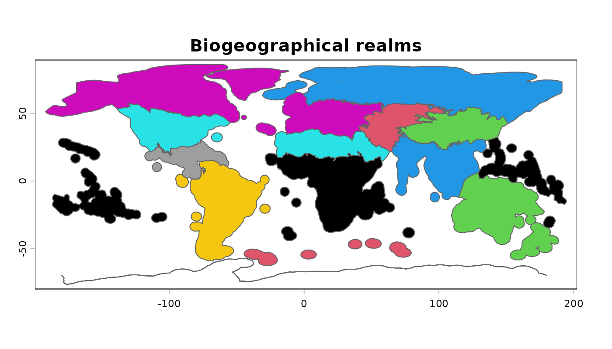
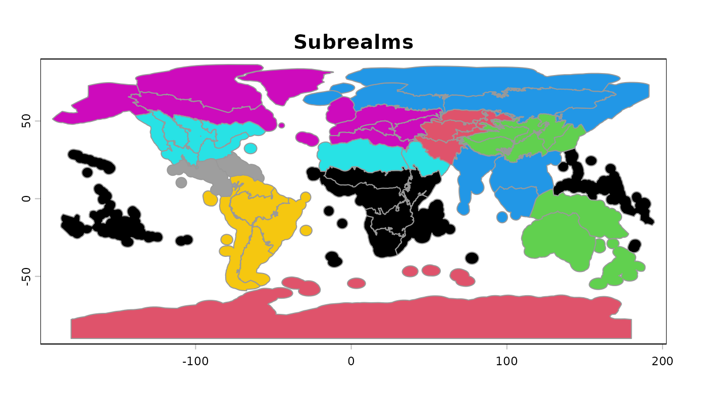
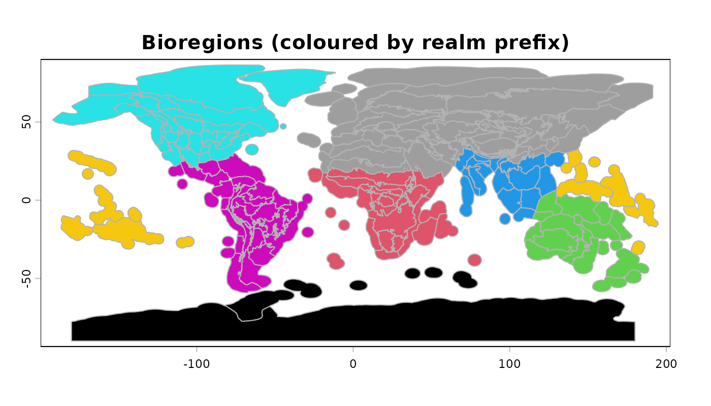
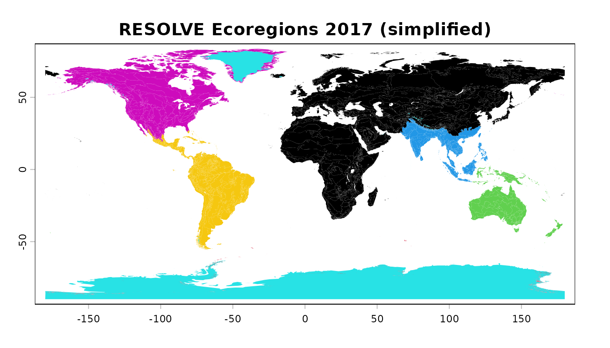
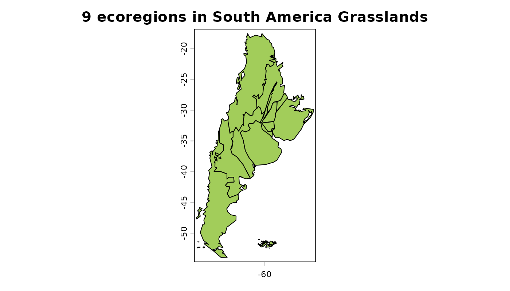
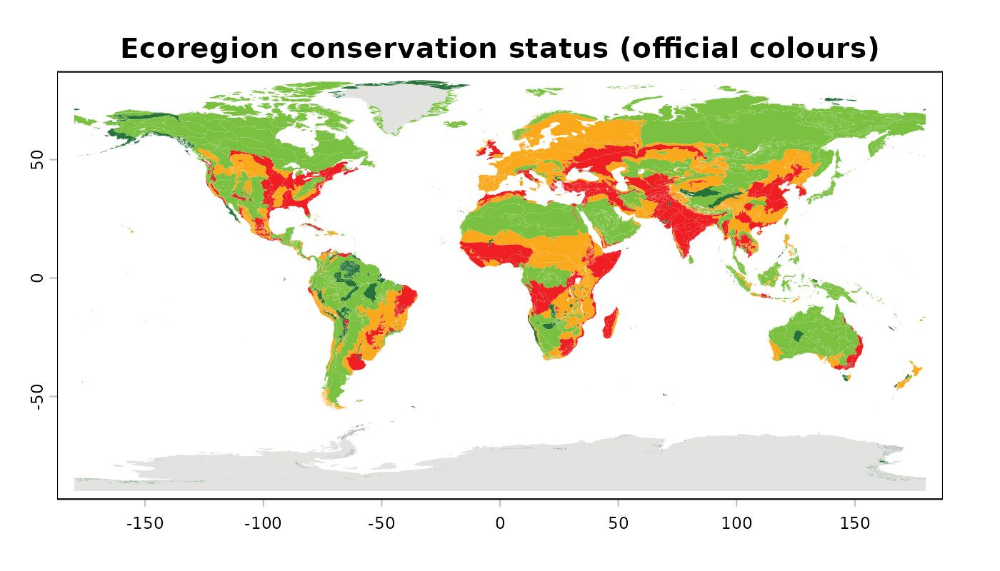

The One Earth Bioregions Framework organises the terrestrial realm into a four-level hierarchy:
| Level | Features | Function |
|---|---|---|
| Realm | 14 | oe_layer("realms") |
| Subrealm | 53 | oe_layer("subrealms") |
| Bioregion | 185 | oe_layer("bioregions") |
| Ecoregion | 847 | oe_layer("ecoregions") |
realms <- oe_layer("realms")
plot(realms, col = as.factor(realms$biogeorelm), border = "grey40",
main = "Biogeographical realms")
subrealms <- oe_layer("subrealms")
plot(subrealms, col = as.factor(subrealms$biogeorelm), border = "grey60",
main = "Subrealms")
bioregions <- oe_layer("bioregions")
plot(bioregions, col = as.factor(substr(bioregions$bioregions, 1, 2)),
border = "grey70", main = "Bioregions (coloured by realm prefix)")
ecoregions <- oe_layer("ecoregions") # simplified geometry
plot(ecoregions, col = as.factor(ecoregions$realm), border = NA,
main = "RESOLVE Ecoregions 2017 (simplified)")
For publication-quality boundaries, download the original geometries
once; they are cached per user. full = TRUE works for all
four layers — the ecoregions (~150 MB) come from the public RESOLVE
bucket, the framework layers from the One Earth shared folders:
The bioregion layer only carries codes (e.g. AN03), so
the hierarchy is best traversed spatially. A spatial join from ecoregion
centroids to the coarser levels recovers the full path for any
ecoregion:
pts <- centroids(ecoregions)
sub_of <- terra::relate(pts, subrealms, relation = "intersects")
sub_idx <- apply(sub_of, 1, function(x) which(x)[1])
ecoregions$subrealm <- subrealms$subrealm_n[sub_idx]
head(ecoregions[, c("eco_name", "realm", "subrealm")] |> values())
#> eco_name realm
#> 1 Adelie Land tundra Antarctica
#> 2 Admiralty Islands lowland rain forests Australasia
#> 3 Aegean and Western Turkey sclerophyllous and mixed forests Palearctic
#> 4 Afghan Mountains semi-desert Palearctic
#> 5 Ahklun and Kilbuck Upland Tundra Nearctic
#> 6 Al-Hajar foothill xeric woodlands and shrublands Palearctic
#> subrealm
#> 1 Antarctic Continent & Islands
#> 2 Australasian Islands & East Indonesia
#> 3 Mediterranean
#> 4 Persian Deserts & Forests
#> 5 Alaska
#> 6 Greater Arabian PeninsulaAnd the reverse — listing every ecoregion inside one subrealm:
sa_grass <- ecoregions[ecoregions$subrealm == "South America Grasslands", ]
plot(sa_grass, col = "darkolivegreen3",
main = sprintf("%d ecoregions in South America Grasslands",
nrow(sa_grass)))
The bioregion geometry only carries codes;
oe_bioregion_names maps them to names and their position in
the hierarchy:
head(oe_bioregion_names)
#> code name biogeographic_realm
#> 1 AN01 Continental Antarctica Antarctic
#> 2 AN02 Antarctic Peninsula & Scotia Sea Antarctic
#> 3 AN03 Subantarctic Indian Ocean Islands Antarctic
#> 4 AT01 Tristan Volcanic Islands Afrotropical
#> 5 AT02 South African Cape Shrublands & Mountain Forests Afrotropical
#> 6 AT03 Amsterdam-Saint Paul Islands Afrotropical
#> realm subrealm
#> 1 Antarctica Antarctic Continent & Islands
#> 2 Antarctica Antarctic Continent & Islands
#> 3 Antarctica Antarctic Continent & Islands
#> 4 Afrotropics Southern Afrotropics
#> 5 Afrotropics Southern Afrotropics
#> 6 Afrotropics Madagascar & East African Coast
bioregions <- merge(bioregions, oe_bioregion_names,
by.x = "bioregions", by.y = "code")
bioregions[bioregions$name == "Amazon River Estuary", ]
#> class : SpatVector
#> geometry : polygons
#> dimensions : 1, 8 (geometries, attributes)
#> extent : -52.92505, -39.61838, -5.311916, 7.097323 (xmin, xmax, ymin, ymax)
#> coord. ref. : lon/lat WGS 84 (EPSG:4326)
#> names : bioregions objectid shape_leng shape_area name biogeographic_~ realm subrealm
#> type : <chr> <num> <num> <num> <chr> <chr> <chr> <chr>
#> values : NT16 58 -46.8187 -46.8187 Amazon River E~ Neotropical Southern America AmazoniaThe ecoregion layer keeps the original RESOLVE attributes, including the protection-status fields of the framework:
table(ecoregions$nnh_name)
#>
#> Half Protected N/A
#> 98 1
#> Nature Could Reach Half Protected Nature Could Recover
#> 313 228
#> Nature Imperiled
#> 207nnh_name (“Nature Needs Half” assessment) classifies
each ecoregion as Protected, Half Protected,
Nature Could Reach Half Protected, or Nature Imperiled
— the colour ramps color, color_bio,
color_nnh ship with the data for reproduction of the
official maps:
plot(ecoregions, col = ecoregions$color_nnh, border = NA,
main = "Ecoregion conservation status (official colours)")